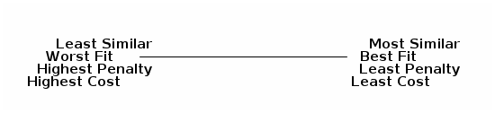

Atabey Kaygun
Thursday, March 25, 2021

∑x∥f(x) − g(x)∥p
∑xp(x)log (p(x)/q(x))
Sim(x, y) = (x ⋅ y)/∥x∥∥y∥
Cost(θ) = ∑xdist(f(x, θ), y)
Gradient descent
θn + 1 = θn + γ∇F(θn)
Cost(θ) = Ψ(θ) + ∑xdist(f(x, θ), y)
argminp∑x∥x − p(x)∥